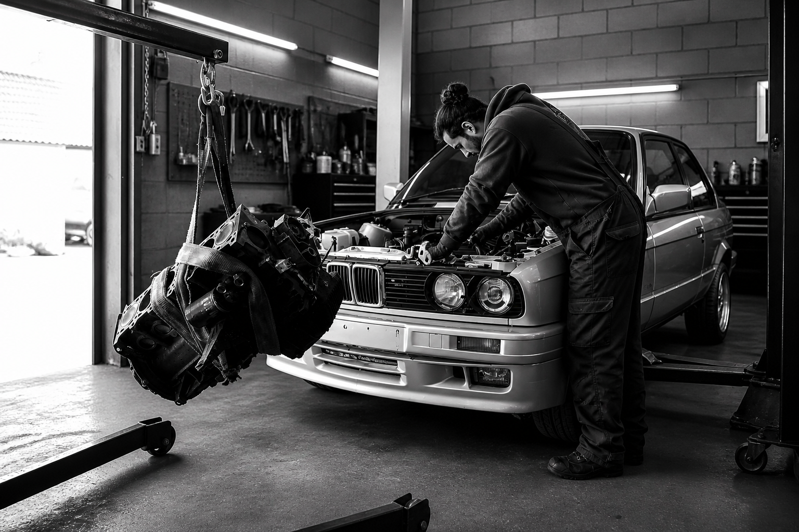
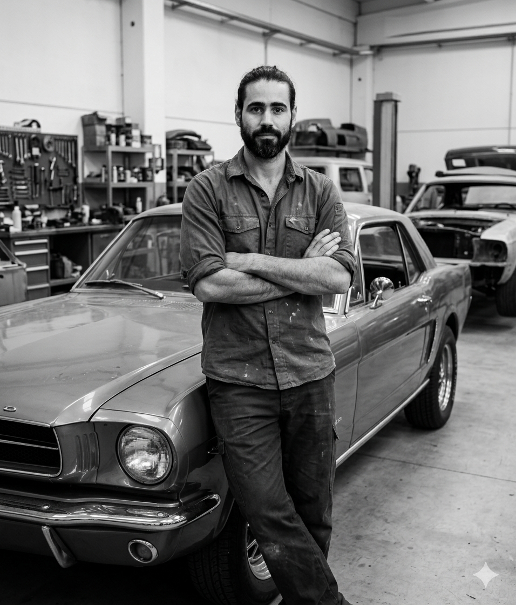

Every car has a story. We make sure it continues.
De Caires Classics is a restoration studio based in the Maremma, Tuscany. We work on British, Italian, and European classics — from complete mechanical rebuilds to bodywork, interior retrimming, and bespoke engineering. Each project begins with a conversation.
What we do
Engine rebuilds, gearboxes, brakes, suspension, electrical systems. Every component inspected. Rebuilt or replaced where necessary.
Panel repair, rust treatment, preparation and paint matching. The correct colour, applied correctly — not approximated.
Upholstery, door cards, carpeting, dashboard restoration. Period-correct materials where possible. No shortcuts on the finishing.
Custom modifications, sympathetic upgrades, one-off engineering work. If you have a specific project in mind, the first step is a conversation.

About
Trained in Venezuela on racing mechanics. Bodywork and paint in Italy. Years on British classics in Bristol — Jaguars above all, but also Porsche, Alfa Romeo, Maserati, Triumph, MG, Aston Martin.
Now based in the Maremma. The same attention to detail. A longer list of experience behind it.
Every restoration begins the same way. Tell us about the car, its history, and what you have in mind.